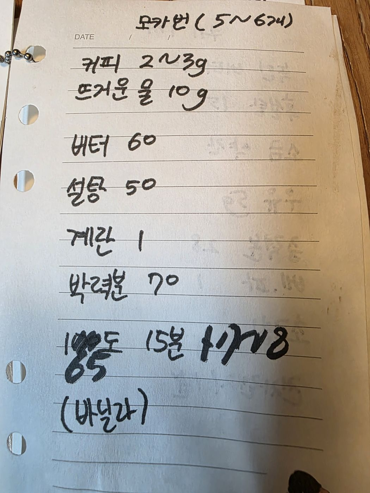

← 전체 레시피
머핀·번
🥐 모카번
손으로 적은 노트를 그대로 옮긴 레시피입니다.
분량
5~6개
굽기
185℃ · 15분
📷 원본 노트 사진 보기
재료
커피액
커피 2~3g
뜨거운 물 10g
모카 토핑
버터 60g
설탕 50g
계란 1개
박력분 70g
바닐라
만드는 법
커피 2~3g을 뜨거운 물 10g에 녹여 식힌다.
버터를 풀고 설탕 → 계란 → 커피액 순으로 섞는다.
박력분을 체 쳐 섞어 짤주머니에 담는다.
빵 반죽 위에 소용돌이로 짜고 185℃에서 15분 굽는다.

원본 노트 사진 — 탭하면 크게 볼 수 있어요